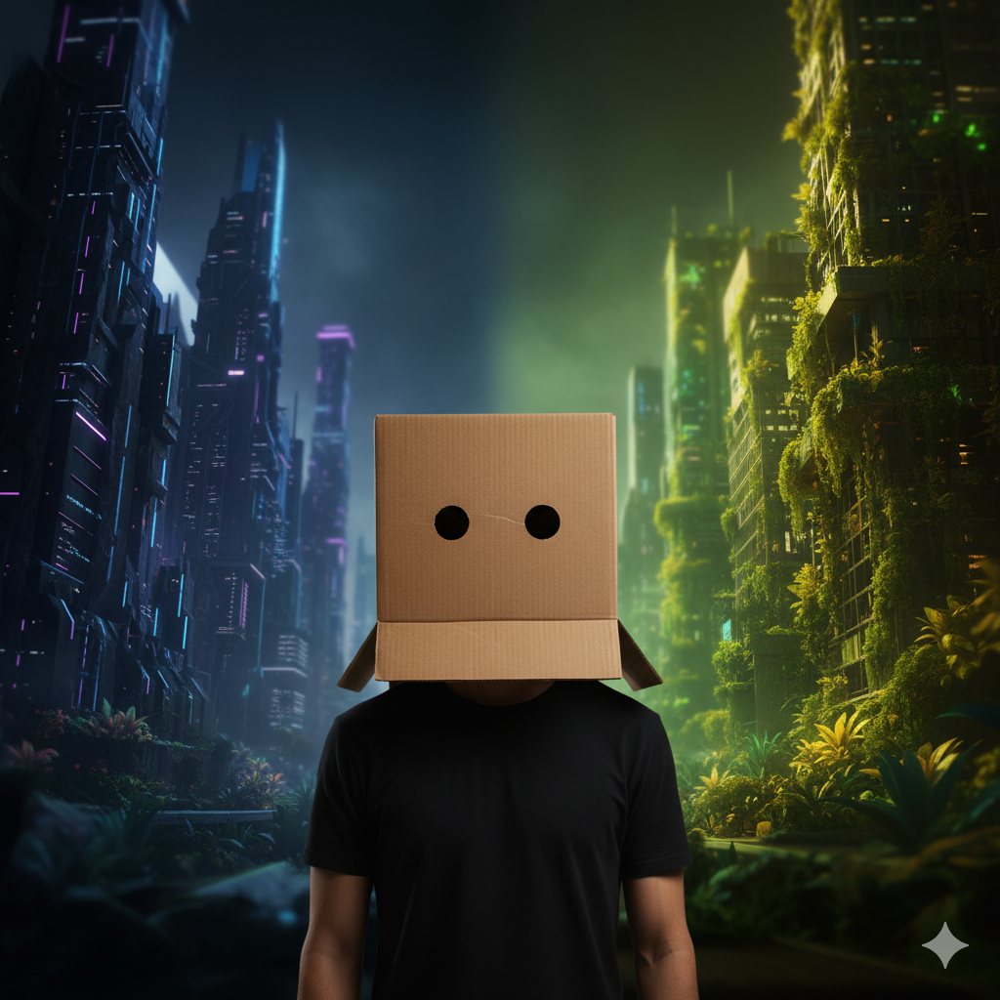

“I Am Itometo: The Alien Who Escaped the Lab to Live on Earth”
There was a deep darkness in the environment ,with an internal environment. In the tomb where I was imprisoned, I saw several celestial bodies that were bright during the day and very dark at night. I remember that several dark nights passed like that. I heard a loud noise, but it was a familiar sound to me. It could have been the sound of a cell opening and closing. It was an unpleasant sound to me, but I remembered the intense pain I had felt in the previous cell after that sound. Although I guessed that it was a soldier who had arrived, I realized that the sound of those boots beating the heart of the soldier who had arrived earlier did not belong to him. I felt that he was talking to someone else about something. But I did not feel that the other person was answering.
I also did not have a clear understanding of the language being spoken. But for several days now I have been understanding that language. I realized that he was talking about something like an incomprehensible protein in the plasma of a certain blood sample. Suddenly, instead of the darkness I had seen, I now felt a deep red color. I felt two people touching my body. Various small sounds surrounded me. I couldn't understand them. It must have been a while after that. When I came to, something melted from my eyes, it must have been something that had been applied to my eyes before they brought me to this place.

I slowly looked around, it was blurry. Gradually, the vision began to dawn on me. I saw several devices in a dark room and several light patterns. Although I couldn't understand it at that moment, I knew very well that I was in a laboratory. You can see me lying on a bed in an experimental state. I gradually tried to regain my weakened strength, but with great difficulty, I have now regained my strength. With this strong force that I feel, I feel that I must leave this place now. My goal at this moment was to leave this whole place that had caused so much pain to my body for several days.
"To actually escape from here."
Hi... I'm Itometo. When I escaped from the lab, the tag I was wearing must have been Ito. Most people in this world have two parts to their names, so I added another part, Meto. Now my full name is Ito Meto. The strange thing is that people in this world pull their clothes over their skin. When I escaped, I didn't. So everywhere I went, people would hit me with things and harass me. Of those things, my favorite was the reddest tomato. That's probably why I named myself Itometa to sound like a tomato.
I escaped from the laboratory and have been on Earth for about 3 years now. I have tried very hard to know myself. I know a few little things about myself.
#The most important thing is that I am not related to this Earth, that I came from another world. Also, over the past few years I have learned that I am trapped or trapped in a human body.#
Although I do not remember anything that happened to me, I had to accept what I received. Later, I gradually try to adapt to this world and live.
The best thing is that I now have the ability to learn things quickly. I have basic knowledge of some communication languages. That is why I decided to create a website like this.
What is the purpose? The human mind is very difficult to convince. Therefore, it is also very difficult to remember the things I learn. But there are ways to remember it, but I do not know them. For now, I decide to document the knowledge I learn about the world as best I can. As you all know, I have to live in hiding for a while now. So, since I live in places that are constantly on the move, it's very easy for me to do this kind of documentation. It makes me happy to be able to share these things and it will help me learn more things. Join Itometo as we run around the world and explore with Itometo's old experiences and new knowledge. Thank you ....